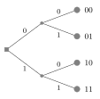
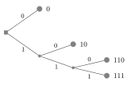
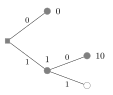
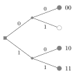
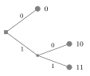
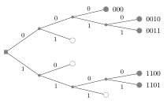
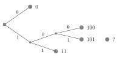

Tema 3. Codis de font binaris sense prefixe pdf
Introducció
L'objectiu principal de la compressió de dades és eliminar la redundància present a les dades per tal de minimitzar l'espai d'emmagatzematge o el temps de transmissió.
Exemple 3.1. Un llançament de daus just es pot modelar com una variable aleatòria amb l'alfabet $\{1,2,3,4,5,6\}$ i la distribució de probabilitat $\bigl\{\frac 16,\frac 16,\frac 16,\frac 16,\frac 16,\frac 16\bigr\}$. Podem utilitzar la representació binària directa i obtenir $$ 1\mapsto 001 ~~~~~ 2\mapsto010 ~~~~~ 3\mapsto011 ~~~~~ 4\mapsto 100 ~~~~~ 5\mapsto 101 ~~~~~ 6\mapsto 110. \tag{3.1} $$ Hi ha alternatives a això, però. Per exemple, $$ 1\mapsto 00 ~~~~~ 2\mapsto01 ~~~~~ 3\mapsto100 ~~~~~ 4\mapsto 101 ~~~~~ 5\mapsto 110 ~~~~~ 6\mapsto 111 \tag{3.2} $$ o fins i tot $$ 1\mapsto 1100 ~~~~~ 2\mapsto1010 ~~~~~ 3\mapsto0110 ~~~~~ 4\mapsto 1001 ~~~~~ 5\mapsto 0101 ~~~~~ 6\mapsto 0011. \tag{3.3} $$
Els anteriors són mapes un a un (bijectius); no tenen pèrdues, és a dir, que en observar la cadena binària, el missatge original sempre es pot recuperar. Per exemple, si el resultat de diversos llançaments de daus es codifica utilitzant el codi font a $(3.2)$ com a $1000100$, sabem que correspon a la seqüència font $(3,2,1)$. La mateixa seqüència codificada amb el codi font a $(3.3)$ seria $011010101100$, molt més llarga.
En general, mesurarem l'eficiència d'un codi utilitzant la quantitat esperada de bits necessaris per representar una font. Per a una font que pren valors a $\{1,\ldots,r\}$ amb distribució de probabilitat $\{p_1,\ldots,p_r\}$, la longitud mitjana del codi ve donada per $$ L_{\rm av} = \sum_{j=1}^r p_j \ell_j \tag{3.4} $$ on $\ell_j$ és la longitud (mesurada en dígits binaris) de la cadena binària associada al símbol $j$.
Exemple 3.2. Segons el codi font $(3.1)$ de l'exemple 3.1, tots els símbols de la font es mapegen en cadenes binàries de longitud $3$. Per tant, $\ell_j=3$ per a tots els $j\in\{1,\ldots,6\}$ de l'alfabet i la longitud mitjana és simplement $ L_{\rm av} = 3$ bits per símbol. De la mateixa manera, $L_{\rm av}=4$ bits per símbol per al codi de (3.3). El codi de (3.2) té longituds variables: $\ell_j=2$ per a $j\in\{1,2\}$ i $\ell_j=3$ per a $j\in\{3,4,5,6\}$. Per tant, $L_{\rm av}=\frac 83 \approx 2.667$ bits per símbol. El codi $(3.2)$ proporciona clarament una manera més eficient (més curta) de representar la font.
Exemple 3.3. T'agradaria configurar el teu propi sistema telefònic que et connecti amb els teus 3 millors amics mitjançant codis binaris. El número de telèfon serà una paraula codi i el conjunt de paraules codi és el codi o diccionari. Saps que trucaràs al Bernat un $50\%$ de les vegades, i que trucaràs a l'Alba i la Carola un $25\%$ de les vegades cadascuna. La font es pot modelar mitjançant l'alfabet $\{\text{Alba},\text{Bernat},\text{Carola}\}$ amb distribució de probabilitat $\bigl\{\frac 14, \frac 12, \frac 14 \bigr\}$. Ara examinem diversos mètodes per produir els números de telèfon indicats a la taula 3.1 següent.
| Amic | Probabilitat | (a) | (b) | (c) | (d) | (e) | (f) |
|---|---|---|---|---|---|---|---|
| Alba | 0.25 | 0011 | 001101 | 0 | 00 | 0 | 10 |
| Bernat | 0.5 | 0011 | 001110 | 1 | 11 | 11 | 0 |
| Carola | 0.25 | 1100 | 110000 | 10 | 10 | 10 | 11 |
Al codi (a), l'Alba i el Bernat tenen el mateix número, per tant, el sistema no es connectarà correctament. El codi (b) funcionarà, ja que cadascun té un número de telèfon diferent, però els números són molt llargs i el sistema esdevé ineficient. El codi (c) és un codi més curt, però observeu que el sistema no funcionarà: quan marquem $10$ no està clar si vol dir “Carola” o bé “Bernat, Alba”. El codi (c) no és únicament descodificable. El codi (d) és el primer codi eficient que funciona i es pot descodificar de manera única, però per què assignem $00$ a l'Alba si quan marquem $0$ està clar que volem trucar a l'Alba? Una millora n'és el codi (e): és únicament descodificable, però no és el més eficient, ja que el codi està assignant una cadena de 2 bits al símbol més probable! Finalment, (f) és el codi òptim amb una longitud mitjana de $L_{\rm av}=1.5$ bits per símbol. És interessant assenyalar que un cop acabem de marcar, el sistema immediatament sap que hem acabat de marcar. Això és perquè cap paraula de codi és un prefix de cap altra, és a dir, el codi és sense prefix.
Codis sense prefix
Els codis sense prefix són codis de longitud variable que garanteixen una descodificabilitat única i, dissenyats correctament, són eficients en termes de longitud mitjana, és a dir, minimitzen $(3.4)$.
Considereu una font discreta sense memòria $U$ prenent valors sobre l'alfabet $\{1,\ldots,r\}$. Un codi font binari és el conjunt de paraules de codi ${\cal C}=\{{\cal C}(1),{\cal C}(2),\ldots,{\cal C}(r)\}$, on cada ${\cal C}(j)$ és la seqüència binària utilitzada per representar el símbol font $j\in\{1,\ldots,r\}$. Per exemple, el codi (f) de la taula 3.1 per a la font $\{\text{Alba},\text{Bernat},\text{Carola}\}$ és donat per ${\cal C}(\text{Alba})=10$, ${\cal C}(\text{Bernat})=0$ i ${\cal C}(\text{Carola})=11$, o simplement el conjunt $\{10,0,11\}$. Una seqüència font de longitud $n$ és la seqüència $(u_1,\ldots,u_n)$ on cada $u_i\in\{1,\ldots,r\}$. Una codificació símbol a símbol consisteix en ${\cal C}(u_1)\cdots {\cal C}(u_n)$, la concatenació de les paraules de codi. Per exemple, la seqüència font $(\text{Alba},\text{Alba},\text{Carola},\text{Bernat},\text{Carola})$ de longitud $n=5$ està codificada com a $101011011$, una seqüència binària de longitud de 9 bits.
Un codi s'anomena únicament descodificable si no existeix cap parell de seqüències diferents $(u_1,\ldots,u_n)\neq (u'_1,\ldots,u'_m)$ de manera que ${\cal C}(u_1)\cdots {\cal C}(u_n)={\cal C}(u'_1)\cdots {\cal C}(u_m')$, és a dir, perquè un codi sigui descodificable de manera única, no es poden codificar dues seqüències font diferents en la mateixa paraula de codi. Recordeu el sistema telefònic (c) de l'exemple 3.3. Un codi s'anomena sense prefix si cap paraula de codi és un prefix de cap altra paraula de codi.
Problema 3.5. Considereu els codis ${\cal C}_1=\{0,10,110,111\}$ i ${\cal C}_2=\{0,01,011,111\}$ per a una font $\{a,b,c,d\}$. Els codis són únicament decodificables i/o lliures de prefix? Descodifiqueu la seqüència $0011011110$ utilitzant els dos codis.
Mostra la solució
El codi ${\cal C}_1$ no té prefix perquè cap paraula de codi és un prefix de cap altra i, per tant, el codi es pot descodificar de manera única. El codi ${\cal C}_2$ no està lliure de prefix perquè ${\cal C}(a)$ és el prefix de ${\cal C}(b)$ i ${\cal C}(c)$, mentre que ${\cal C}(b)$ també és el prefix de ${\cal C}(c)$. Observeu, però, que el codi és únicament descodificable perquè el bit $0$ és com una coma quan es llegeix de dreta a esquerra. Utilitzant el primer codi, la seqüència a descodificar es pot agrupar de manera única com a $0,0,110,111,10$. Com que ${\cal C}^{-1}(0)=a, {\cal C}^{-1}(110)=c$, ${\cal C}^{-1}(111)=d$ i ${\cal C}^{-1}(10)=b$, descodifiquem la seqüència com a $(a,a,c,d,b)$. Per al segon codi, hem de llegir de dreta a esquerra com $0,011,01,111,0$ per obtenir $(a,c,b,d,a)$.
Qualsevol codi binari es pot representar com un arbre binari (vegeu la Figura 3.1). Agafeu qualsevol paraula de codi i considereu cada bit com una decisió sobre si pujar (0) o baixar (1). Així, cada paraula de codi pot ser representada per un camí particular a l'arbre, com els dos exemples de la Figura 3.1. En els arbres, el node arrel es denota amb un quadrat, els nodes intermedis amb cercles petits i els nodes de fulla com a cercles grisos. Les vores es representen amb una línia sòlida. Les etiquetes de la dreta denoten seqüències binàries. De manera similar, a la Figura 3.2, il·lustrem les representacions en arbre binari dels codis (c), (d), (e) i (f) de l'exemple 3.3. El node del cercle blanc indica una fulla sense paraula de codi. Observeu que el codi (c) no està lliure de prefixos i té una paraula de codi al llarg del camí cap a una altra paraula de codi. Així, un codi no té prefixos si en la seva representació en arbre totes les paraules de codi apareixen com a fulles a l'arbre.
El següent és un resultat important relacionat amb l'existència de codis sense prefix i arbres binaris.





Teorema 3.6 (Desigualtat de Kraft). Considereu un codi font binari ${\cal C}$ per a una font amb alfabet $\{1,\ldots,r\}$ i distribució de probabilitat $\{p_1,\ldots,p_r\}$. Aleshores, si el codi no té prefixos, satisfà $$ \sum_{j=1}^r2^{-\ell_j} \leq 1. \tag{3.5} $$ A més, existeix un codi sense prefix amb longituds $\ell_j$ per a $j\in\{1,\ldots,r\}$ que satisfà $(3.5)$.
Exemple 3.7. Un codi amb distribució de longituds $\{\ell_1,\ldots,\ell_r\}=\{3,4,4,4,4\}$ satisfà la desigualtat de Kraft ja que $$ \sum_{j=1}^r 2^{-\ell_j} = 2^{-3}+4\cdot 2^{-4} = \frac1 8 +\frac {4}{16} = \frac 3 8\leq 1 . \tag{3.6}$$ Per tant, existeix un codi sense prefix amb aquestes longituds, per exemple $\{000,0010,0011,1100,1101\}$. En canvi, per a una distribució de longituds $\{1,2,3,3,4\}$, no podem construir un codi sense prefixos perquè $$ 2^{-1}+2^{-2}+2\cdot2^{-3} + 2^{-4} = \frac{17}{16}\geq1 \tag{3.7}$$ Un possible intent de construir aquest codi es mostra a la Figura 3.3, on hi ha una paraula de codi de longitud 4 que no es pot connectar enlloc. No és possible construir aquest codi.


Acabem aquesta lliçó afirmant un resultat fonamental en la compressió de dades.
Teorema 3.8. La longitud mitjana de qualsevol codi de longituds sense prefix $\{\ell_1,\ldots,\ell_r\}$ utilitzat per representar una font $U$ prenent valors a $\{1,\ldots,r\}$ amb distribució de probabilitat $\{p_1,\ldots,p_r\}$ satisfà $$ L_{\rm av} \geq H(U), \tag{3.8} $$ on $H(U)$ és l'entropia de la font, mesurada en bits, que ve donada per $$ H(U) = - \sum_{j=1}^r p_j \log_2 p_j. \tag{3.9}$$ Tingueu en compte que per complir la desigualtat $(3.8)$ amb igualtat, les longituds haurien de ser tals que $ 2^{-\ell_j} = p_j$ exactament per a tot $j\in\{1,\ldots,r\}$.
Problema 3.9. Considereu una font $U$ que pren els valors $\{1,2,3\}$ amb la mateixa probabilitat. Trobeu un codi sense prefix amb distribució de longitud $\{1,2,2\}$ i comproveu que es compleixen els teoremes 3.6 i 3.8.
Mostra la solució
Un possible codi sense prefix amb aquestes longituds ve donat per $\{0,10,11\}$. El codi és únicament decodificable pel Teorema 3.4, satisfà la desigualtat de Kraft en el Teorema 3.6 amb igualtat des de $\sum_{j=1}^r 2^{-\ell_j} = 1$. Això vol dir que l'arbre binari associat a $\{0,10,11\}$ no té fulles buides! Quan s'utilitza per representar la font $U$, té una longitud mitjana de $L_{\rm av}=\sum_{j=1}^r p_j\ell_j = \frac 53 \approx 1.667$ bits per símbol, i està limitat per l'entropia de la font des de sota ja que $$ H(U)=- \sum_{j=1}^r p_j \log_2 p_j = \log_2 3 \approx 1.585. \tag{3.10}$$
El resultat de $(3.8)$ indica que l'entropia $H(U)$ és la longitud mitjana mínima necessària per representar una font $U$, no podem representar-la sense errors amb menys bits per símbol. De tots els possibles codis sense prefix, volem trobar el que minimitzi la longitud mitjana a $(3.4)$. Aquest serà el tema de la nostra propera lliçó.